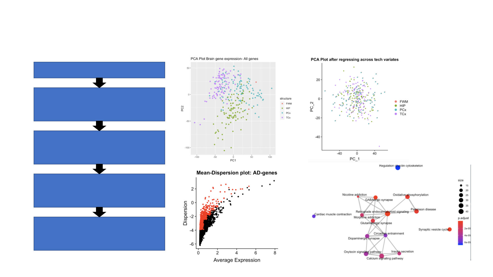

Gene expression model reveals brain-structure specific heterogeneity
and important biological pathways in AD for drug discovery
50281 genes + 33 proteins
Normalized using gene length
and sequencing depth + Scaled(Z
-score)
Unsupervised clustering (PCA +
Hierarchical clustering)
Identified most variable genes
controlling for mean-variance
relationship (n=1504)
Run a logistic regression model